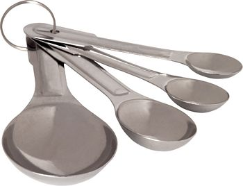

Home
Conversions
Breakfast
Granola
Shakshuka
Appetizers
Bruschetta
Main Courses
Corn, Chile and Cheese Casserole
Here is a helpful guide to use in your cooking:
Conversion Chart
1 Tablespoon (T)
=
3 teaspoons (t)
1 Cup (C)
=
16 T
1 Pint (pt)
=
2 C
1 Quart (qt)
=
2 pt
1 Gallon (gal)
=
4 qt
Last Updated: March 14, 2013